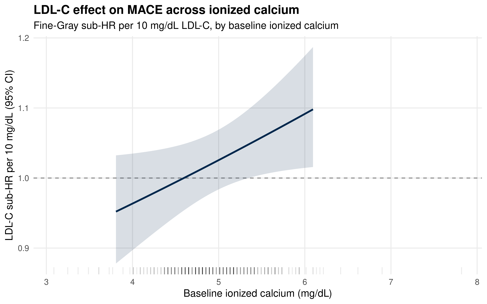

Calcium as a Modifier of the LDL-C → MACE Relationship
Author
Dave Bridges
Published
June 9, 2026
Show the code
library(tidyverse)library(lubridate)library(survival)library(survminer)library(cmprsk)library(broom)library(knitr)# ── CONFIGURATION ──────────────────────────────────────────────────────────# There is a single combined_data folder (the 2026-03-23 pull). The data-pull# notes describing a separate "Calcium and Cholesterol" (MGI) extraction appear# to be a documentation artefact — there is no distinct calcium-rich cohort to# point at. Serum calcium is therefore sparse here (~4,000 patients with any# value), which makes calcium coverage the binding constraint on this analysis.# See the "Calcium Feasibility Diagnostic" section below before trusting any# interaction estimate.DATA_DIR <-"combined_data"SEX_COL <-"GenderCode"RACE_COL <-"RaceCode"ETHNICITY_COL <-"EthnicityCode"LDL_SCALE <-10# LDL-C HR expressed per this many mg/dLCAL_WINDOW <-730# baseline-calcium search window (days around t0)# 365 → N=219/97ev/EPV 8.1 (underpowered for 12-coef model);# 730 → N=367/154ev/EPV 12.8 ✓. See feasibility table.# Widening trades baseline-timing precision for power.# ── CALCIUM MODIFIER CHOICE ─────────────────────────────────────────────────# Two calcium measures exist in LabResultsCleaned.csv, both in mg/dL:# "Ionized Calcium" — ~20,089 patients here; bioactive fraction; NO albumin# correction needed; tends to be ordered in more acute/# inpatient settings. Far better coverage → primary.# "Serum Calcium" — ~4,009 patients here; conventional total calcium; would# benefit from albumin correction (not available); sparse# → run as a sensitivity by setting CALCIUM_TEST below.CALCIUM_TEST <-"Ionized Calcium"# or "Serum Calcium"# Physiologic guardrails (mg/dL) and reporting scale differ by measure.if (CALCIUM_TEST =="Ionized Calcium") { CAL_LOW <-2; CAL_HIGH <-8; CAL_SCALE <-0.5# ionized normal ~4.5–5.3} else { CAL_LOW <-4; CAL_HIGH <-20; CAL_SCALE <-1# total normal ~8.5–10.5}theme_set(theme_minimal(base_size =12))# Michigan colors for plotscolor_mace <-"#00274c"color_accent <-"#ffcb05"color_death <-"#CC6677"color_censor <-"#888888"
Purpose
This script tests the central scientific question of the project: does serum calcium modify the relationship between time-averaged LDL-C and incident MACE?
It re-uses the v3 unified competing-risks framework (ldlc_mace_competing_risks.qmd) — Fine-Gray subdistribution hazard, death as the competing event, time-averaged LDL-C (trapezoid AUC ÷ follow-up years) per 10 mg/dL, adjusted for age, sex, race/ethnicity, ever statin, diabetes, and hypertension — and adds serum calcium as a candidate effect modifier.
The main effects of LDL-C on MACE were null in the v3 analysis (Sub-HR ≈ 1.00). A null main effect can nonetheless mask real effects that are concentrated in a particular metabolic context. Serum calcium indexes that context (vascular calcification, parathyroid/vitamin-D axis), motivating a formal interaction test.
Modifier definition. Calcium (test_name == "Ionized Calcium", already unit-harmonised to mg/dL in labs_cleaning.qmd) characterised at baseline (the measurement nearest to time zero, within ±730 days). Calcium is tightly homeostatically regulated, so a baseline value is a reasonable summary and avoids requiring ≥2 calcium measurements. A time-averaged calcium (trapezoid, parallel to the LDL-C exposure) is used as a sensitivity analysis.
Choice of calcium measure (CALCIUM_TEST). Two measures exist in this dataset. Ionized calcium (~20,089 patients) is the default: it is the physiologically active fraction, needs no albumin correction, and — critically — has ~5× the coverage of serum/total calcium (~4,009 patients), which is too sparse to support a powered interaction here. The trade-off is that ionized calcium is ordered more often in acute/inpatient contexts, so it indexes a somewhat different physiologic state than routine outpatient total calcium. Re-run with CALCIUM_TEST <- "Serum Calcium" as a sensitivity; total calcium would additionally benefit from albumin correction (albumin is in the raw pull but not yet cleaned into test_name — add an Albumin branch to labs_cleaning.qmd, then corrected = total + 0.8 × (4.0 − albumin)).
Interaction strategy (three complementary views).
Continuous × continuous — product of time-averaged LDL-C (per 10 mg/dL) and mean-centred baseline calcium (per 0.5 mg/dL). This is the primary formal test (Wald on the product coefficient; LRT in the Cox sensitivity).
LDL-C × calcium-tertile — product of LDL-C with calcium-tertile dummies; the LDL-C sub-HR is then recovered within each tertile via linear combinations of coefficients.
Fully stratified Fine-Gray — the primary model refit separately within each calcium tertile. Most intuitive; not a formal interaction test but a transparent description of how the LDL-C effect varies.
Baseline calcium = the Ionized Calcium measurement nearest to t0 within ±730 days. Time-averaged calcium (trapezoid, over follow-up) is also computed for the sensitivity analysis.
Calcium co-measurement is the binding constraint. Before trusting any interaction estimate, this table shows the achievable analytic cohort — patient N, MACE events, and events-per-variable for the ~12-coefficient full model — crossing the LDL-measurement requirement against the baseline-calcium window (how close to t0 a calcium value must fall to count as “baseline”). Read it to choose a defensible (window, LDL) combination, or to conclude the question is underpowered in this dataset.
Primary analytic cohort: ≥2 LDL-C measurements and a baseline serum-calcium value. Tertiles are defined within this cohort so they are balanced for the stratified analysis.
# --- Events-per-variable guard ---------------------------------------------# The full interaction model fits ~12 coefficients. With <10 events per# coefficient, Fine-Gray estimates are unstable / prone to quasi-complete# separation (sub-HRs of 0 or 1e+17, p-values that look "significant" but are# artefactual). This guard makes underpowering loud rather than silent — it is# the lesson from the earlier N=19 render.n_coefs_full <-12Lepv <- n_mace_events / n_coefs_fullif (epv <10) {warning(sprintf(paste0("LOW POWER: %d MACE events for ~%d coefficients (%.1f events/var). ","Interpret the fully adjusted interaction with great caution — ","favour the parsimonious/continuous models and check coefficients ","for separation (sub-HRs near 0 or astronomically large)."), n_mace_events, n_coefs_full, epv))}cat(sprintf("Events per variable (full model): %.1f %s\n", epv,if (epv <10) "⚠ UNDERPOWERED"else"✓ adequate"))
# Fit crr() passing vectors directly (NOT with(); see ANALYSIS_NOTES.md).# Robustness for subgroup/stratified fits: drop columns that are zero-variance# OR binary indicators with too few minority cases (these cause quasi-separation# and a computationally singular information matrix). A retry loop then drops the# sparsest remaining indicator if crr() still fails to converge.minority_count <-function(x) { ux <-unique(na.omit(x))if (length(ux) <=2) min(table(x)) elseInf# Inf = treat as continuous}safe_crr <-function(ftime, fstatus, cov_mat, failcode =1, min_minor =5) {# 1. pre-screen: zero variance or sparse indicators vars <-apply(cov_mat, 2, var, na.rm =TRUE) minors <-apply(cov_mat, 2, minority_count) bad <-which(is.na(vars) | vars ==0| minors < min_minor)if (length(bad) >0) {cat(" Dropping zero-variance/sparse columns:",paste(colnames(cov_mat)[bad], collapse =", "), "\n") cov_mat <- cov_mat[, -bad, drop =FALSE] }# 2. fit, retrying on singularity by dropping the sparsest indicatorrepeat { fit <-tryCatch(crr(ftime = ftime, fstatus = fstatus, cov1 = cov_mat,failcode = failcode, cencode =0),error =function(e) e )if (!inherits(fit, "error")) return(fit)if (!grepl("singular", conditionMessage(fit), ignore.case =TRUE) ||ncol(cov_mat) <=1) stop(fit) m <-apply(cov_mat, 2, minority_count)if (all(is.infinite(m))) stop(fit) # only continuous left; give up drop_j <-which.min(m)cat(" Singular fit — dropping sparsest indicator:",colnames(cov_mat)[drop_j], "\n") cov_mat <- cov_mat[, -drop_j, drop =FALSE] }}# Tidy a crr fit's full coefficient tableformat_fg <-function(fg_fit, caption) { s <-summary(fg_fit)tibble(Term =rownames(s$coef),`Sub-HR`=round(exp(s$coef[, "coef"]), 4),`95% CI low`=round(exp(s$coef[, "coef"] -1.96* s$coef[, "se(coef)"]), 4),`95% CI high`=round(exp(s$coef[, "coef"] +1.96* s$coef[, "se(coef)"]), 4),`p-value`=format.pval(s$coef[, "p-value"], digits =3, eps =0.001) ) %>%kable(caption = caption)}# Sub-HR for an arbitrary linear combination of crr coefficients.# `weights` is a named numeric vector keyed by coefficient name.fg_lincom <-function(fg_fit, weights, label) { b <- fg_fit$coef V <- fg_fit$var cvec <-setNames(rep(0, length(b)), names(b)) cvec[names(weights)] <- weights est <-sum(cvec * b) se <-sqrt(as.numeric(t(cvec) %*% V %*% cvec))tibble(Stratum = label,`Sub-HR`=round(exp(est), 4),`95% CI low`=round(exp(est -1.96* se), 4),`95% CI high`=round(exp(est +1.96* se), 4),`p-value`=format.pval(2*pnorm(-abs(est / se)), digits =3, eps =0.001) )}# Shared covariate block (everything except the LDL/calcium terms)adj_cols <-c("Age_baseline", "sex_female","race_black", "race_asian", "race_hisp", "race_other","ever_statin", "ever_diabetes", "ever_hypertension")
Model 0: LDL-C and Calcium Main Effects (no interaction)
For reference — the additive model before adding any interaction term.
Model 1: Continuous LDL-C × Calcium Interaction (PRIMARY TEST)
Product of time-averaged LDL-C and mean-centred baseline calcium. Because calcium is centred, the meanLDL_trap_s coefficient is the LDL-C sub-HR at mean calcium, and ldl_x_cac is the multiplicative change in that sub-HR per 0.5 mg/dL higher calcium.
PRIMARY interaction test (continuous × continuous)
Quantity
Value
Interaction sub-HR ratio (per 0.5 mg/dL Ionized Calcium, per 10 mg/dL LDL-C)
1.0317
95% CI
(1.0016–1.0627)
Wald p-value
0.039
LDL-C sub-HR across the observed calcium range
Predicted LDL-C sub-HR (per 10 mg/dL) as a function of baseline calcium, from Model 1. Ribbon is the 95% CI from the 2×2 covariance block of the LDL-C main and interaction coefficients.
Show the code
b <- fg_int$coefV <- fg_int$var# crr()'s $var has no dimnames; $coef does — propagate them so we can index by namecov_names <-names(b)if (is.null(cov_names)) cov_names <-colnames(cov_int)names(b) <- cov_namesdimnames(V) <-list(cov_names, cov_names)idx <-c("meanLDL_trap_s", "ldl_x_cac")ca_grid <-tibble(Ca_baseline =seq(quantile(analytic$Ca_baseline, 0.02),quantile(analytic$Ca_baseline, 0.98),length.out =100)) %>%mutate(Ca_c = (Ca_baseline -mean(analytic$Ca_baseline)) / CAL_SCALE,loghr = b["meanLDL_trap_s"] + b["ldl_x_cac"] * Ca_c,se =sqrt(V[idx[1], idx[1]] + Ca_c^2* V[idx[2], idx[2]] +2* Ca_c * V[idx[1], idx[2]]),SubHR =exp(loghr),lo =exp(loghr -1.96* se),hi =exp(loghr +1.96* se) )ggplot(ca_grid, aes(Ca_baseline, SubHR)) +geom_hline(yintercept =1, linetype ="dashed", colour ="grey50") +geom_ribbon(aes(ymin = lo, ymax = hi), alpha =0.15, fill = color_mace) +geom_line(colour = color_mace, linewidth =1) +geom_rug(data = analytic, aes(x = Ca_baseline), inherit.aes =FALSE,alpha =0.08, sides ="b") +labs(title =paste0("LDL-C effect on MACE across ", tolower(CALCIUM_TEST)),subtitle =paste0("Fine-Gray sub-HR per ", LDL_SCALE," mg/dL LDL-C, by baseline ", tolower(CALCIUM_TEST)),x =paste0("Baseline ", tolower(CALCIUM_TEST), " (mg/dL)"),y =paste0("LDL-C sub-HR per ", LDL_SCALE, " mg/dL (95% CI)") ) +theme_minimal(base_size =12) +theme(panel.grid.minor =element_blank(),plot.title =element_text(face ="bold"))

Figure 1
Model 2: LDL-C × Calcium-Tertile Interaction
Product of LDL-C with calcium-tertile dummies (reference = T1 low). The LDL-C sub-HR within each tertile is recovered via linear combinations.
Fine-Gray with LDL-C × calcium-tertile interaction (death competing)
Term
Sub-HR
95% CI low
95% CI high
p-value
meanLDL_trap_s
0.9888
0.9256
1.0562
0.740
cal_mid
0.4655
0.1502
1.4425
0.190
cal_high
0.4549
0.1707
1.2126
0.120
ldl_x_mid
1.0438
0.9400
1.1590
0.420
ldl_x_high
1.0733
0.9844
1.1703
0.110
Age_baseline
1.0131
1.0018
1.0245
0.023
sex_female
0.7779
0.5470
1.1063
0.160
race_black
0.7073
0.3987
1.2548
0.240
race_asian
0.7046
0.2786
1.7818
0.460
race_hisp
0.6557
0.2088
2.0593
0.470
race_other
1.2356
0.5356
2.8506
0.620
ever_statin
0.7749
0.5307
1.1315
0.190
ever_diabetes
0.8187
0.5644
1.1877
0.290
ever_hypertension
1.1524
0.6297
2.1092
0.650
Show the code
# LDL-C sub-HR within each tertile via linear combinationsldl_by_tertile <-bind_rows(fg_lincom(fg_tert, c(meanLDL_trap_s =1), "T1 (low)"),fg_lincom(fg_tert, c(meanLDL_trap_s =1, ldl_x_mid =1), "T2 (mid)"),fg_lincom(fg_tert, c(meanLDL_trap_s =1, ldl_x_high =1), "T3 (high)"))ldl_by_tertile %>%kable(caption =paste0("LDL-C sub-HR per ", LDL_SCALE," mg/dL within calcium tertiles (interaction model, linear combinations)"))
LDL-C sub-HR per 10 mg/dL within calcium tertiles (interaction model, linear combinations)
Stratum
Sub-HR
95% CI low
95% CI high
p-value
T1 (low)
0.9888
0.9256
1.0562
0.737
T2 (mid)
1.0320
0.9509
1.1201
0.45
T3 (high)
1.0613
1.0003
1.1260
0.0489
Model 3: Fully Stratified Fine-Gray (within each calcium tertile)
The primary model refit separately within each tertile. Most transparent view of effect modification.
Within a single tertile some covariates become sparse (e.g. minority race/ethnicity groups, comorbidities), which can render the Fine-Gray information matrix singular. The stratified models therefore use a lean, fixed covariate set (age, sex, ever statin) so the adjustment is identical across strata and nothing is dropped. The fully adjusted interaction tests above (Models 1–2, Cox LRT) remain the formal analyses; this is a descriptive view. Any stratum that still fails to converge is reported as NA.
Show the code
adj_cols_lean <-c("Age_baseline", "sex_female", "ever_statin")fit_in_tertile <-function(df, label) { base_row <-tibble(Stratum = label, N =nrow(df),`MACE events`=sum(df$fg_status ==1)) cov <-as.matrix(df %>%select(meanLDL_trap_s, all_of(adj_cols_lean))) out <-tryCatch(fg_lincom(safe_crr(df$follow_up_days, df$fg_status, cov),c(meanLDL_trap_s =1), label),error =function(e) {cat(" Stratum", label, "did not converge:",conditionMessage(e), "\n")tibble(Stratum = label, `Sub-HR`=NA_real_,`95% CI low`=NA_real_, `95% CI high`=NA_real_,`p-value`=NA_character_) } ) base_row %>%left_join(out, by ="Stratum")}stratified_ldl <- analytic %>%group_split(Ca_tertile) %>%map2_dfr(levels(analytic$Ca_tertile), ~fit_in_tertile(.x, .y))stratified_ldl %>%kable(caption =paste0("LDL-C sub-HR per ", LDL_SCALE," mg/dL — fully stratified Fine-Gray within calcium tertiles"))
LDL-C sub-HR per 10 mg/dL — fully stratified Fine-Gray within calcium tertiles
Stratum
N
MACE events
Sub-HR
95% CI low
95% CI high
p-value
T1 (low)
136
62
0.9881
0.9257
1.0547
0.718
T2 (mid)
116
42
1.0445
0.9480
1.1508
0.379
T3 (high)
115
50
1.0703
1.0098
1.1344
0.022
Sensitivity A: Cox Interaction with Likelihood-Ratio Test
Fine-Gray gives a Wald test for the interaction; Cox additionally permits a clean LRT (nested-model comparison), which is generally preferred for interaction terms.
tibble(Test ="LRT: main-effects vs interaction (Cox)",`Chi-sq`=round(lrt$Chisq[2], 3),df = lrt$Df[2],`p-value`=format.pval(lrt$`Pr(>|Chi|)`[2], digits =3, eps =0.001)) %>%kable(caption ="Likelihood-ratio test for the LDL-C × calcium interaction")
Likelihood-ratio test for the LDL-C × calcium interaction
Test
Chi-sq
df
p-value
LRT: main-effects vs interaction (Cox)
3.882
1
0.0488
Sensitivity B: Time-Averaged Calcium as the Modifier
Re-runs the continuous interaction using time-averaged calcium (trapezoid) instead of baseline calcium, restricted to patients with a computable time-averaged value.
Reading the results. The continuous interaction (Model 1) is the primary test: a ldl_x_cac sub-HR ratio meaningfully above 1 with a small p-value would indicate the LDL-C → MACE effect strengthens at higher calcium; below 1, it weakens. Models 2 and 3 localise any such pattern to specific tertiles, and the Cox LRT (Sensitivity A) provides a complementary significance test. Concordance between the baseline-calcium (primary) and time-averaged-calcium (Sensitivity B) results indicates robustness to how the modifier is summarised.